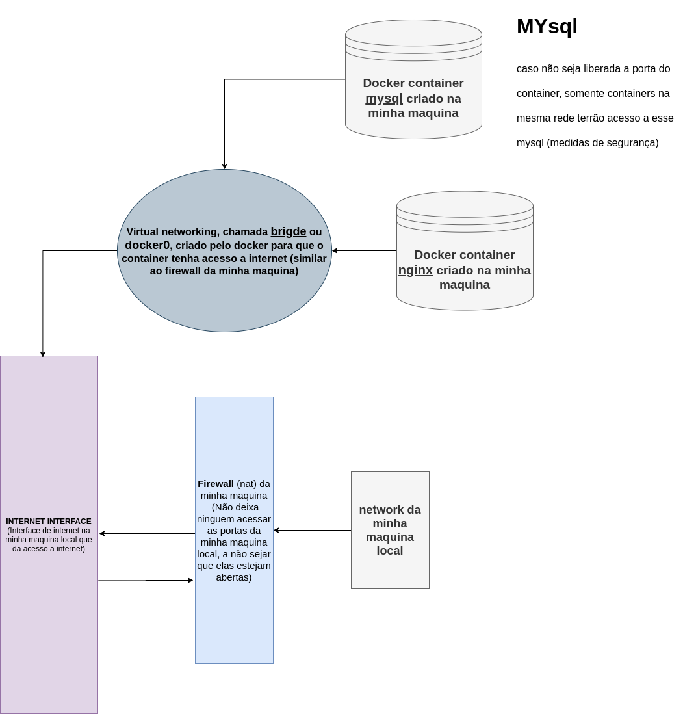

docker network ls (lista todas as networks criadas)
docker network inspect (listar infromações de todas as networks criadas)
docker network create --driver
(Cria uma network, tem opção de informar o driver)
Tipode de Drivers, ao criar um network sem especificar o tipo ele cria por padrão o bridge (ip padrão: 172.17.0.2/16)
docker network connect (conectar um container a uma network)
docker network disconnect (desconectar um container a uma network)
docker network create --help (Exibi todas as opções possiveis ao criar uma network)
docker network create my_app_network (Cria um network chamada my_app_network)
docker container run -d --name new_nginx --network my_app_network nginx (Cria um container chamado new_nginx e colocar ele na network chamada my_app_network)
docker network connect [networkId] [containerId] (connecta um container em uma network)
docker network disconnect [networkId] [containerId] (disconnecta um container em uma network)
